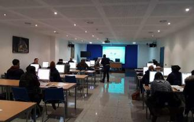

Taller de informática 
Este taller pretende introducir a las personas interesadas en el fascinante universo de la informática. De forma divertida y práctica, irán adquiriendo habilidad y experiencia en el uso del ordenador y se familiarizarán con los programas que más se adecuan a su edad e intereses. Esta introducción a las nuevas tecnologías sentará una sólida base en el niño que le permitirá, desde pequeño, desenvolverse con soltura en el mundo de la informática.
Contenidos
- Introducción al computador.
- Sistemas operativos.
- Windows.
- Internet.
- Microsof Word.
- Formato de texto.
- Imágenes.
- Configurar pagina.
- Impresión.
Taller de montaje,  Aprende a montar un equipo informático desde 0 con nosotros!
Aprende a montar un equipo informático desde 0 con nosotros!
¿Qué harás en este taller?
Contenidos
- Montar y reparar con eficiencia equipos informáticos
- Realizar operaciones de puesta a punto y reglaje
- Optimizar el prodeso de cadena de montaje
- Identificar los problemas que puedan surgir y ofrecer soluciones rápidas
Taller de Programación
El objetivo de la unidad curricular es integrar conocimientos de programación e incorporar conocimientos avanzados para la construcción de sistemas de software de mediano y gran porte, aplicando conceptos básicos de la orientación a objetos.
Particularmente, la unidad curricular se enfocará en:
- Dar los primeros pasos en conocer el lenguaje de programación Java.
- Aplicar la metodología básica para el uso de sus herramientas.
- Poner en evidencia problemas que surgen en la construcción sistemas de software y plantear herramientas para su solución.
- Introducir la programación orientada a objetos adecuada al objetivo del taller.